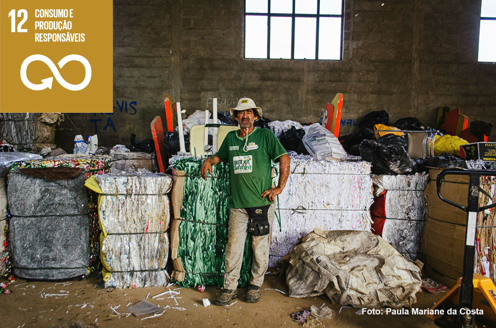
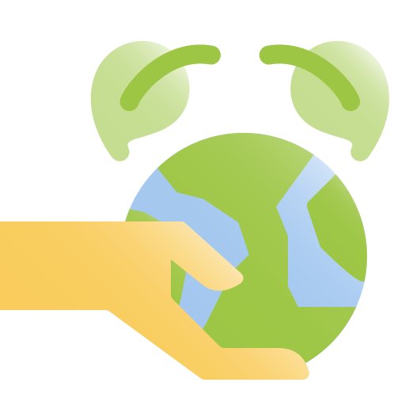
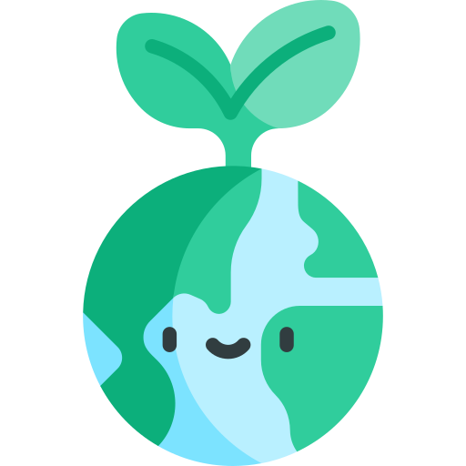
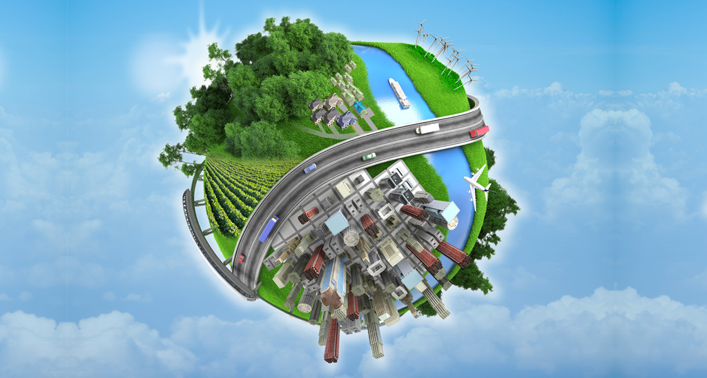

12.1 Implementar o Plano Decenal de Programas Sobre Produção e Consumo Sustentáveis, com todos os países tomando medidas, e os países desenvolvidos assumindo a liderança, tendo em conta o desenvolvimento e as capacidades dos países em desenvolvimento.

12.2 Até 2030, alcançar gestão sustentável e uso eficiente dos recursos naturais.
12.3 Até 2030, reduzir pela metade o desperdício de alimentos per capita mundial, em nível de varejo e do consumidor, e reduzir as perdas de alimentos ao longo das cadeias de produção e abastecimento, incluindo as perdas pós-colheita.
12.4 Até 2020, alcançar o manejo ambientalmente adequado dos produtos químicos e de todos os resíduos, ao longo de todo o ciclo de vida destes, de acordo com os marcos internacionalmente acordados, e reduzir significativamente a liberação destes para o ar, água e solo, para minimizar seus impactos negativos sobre a saúde humana e o meio ambiente.
12.5 Até 2030, reduzir substancialmente a geração de resíduos por meio da prevenção, redução, reciclagem e reuso.
12.6 Incentivar as empresas, especialmente as empresas grandes e transnacionais, a adotar práticas sustentáveis e a integrar informações de sustentabilidade em seu ciclo de relatórios.
12.7 Promover práticas de compras públicas sustentáveis, de acordo com as políticas e prioridades nacionais.
12.8 Até 2030, garantir que as pessoas, em todos os lugares, tenham informação relevante e conscientização sobre o desenvolvimento sustentável e estilos de vida em harmonia com a natureza.
12.a Apoiar países em desenvolvimento para que fortaleçam suas capacidades científicas e tecnológicas em rumo à padrões mais sustentáveis de produção e consumo.
12.b Desenvolver e implementar ferramentas para monitorar os impactos do desenvolvimento sustentável para o turismo sustentável que gera empregos, promove a cultura e os produtos locais.
12.c Racionalizar subsídios ineficientes aos combustíveis fósseis, que encorajam o consumo exagerado, eliminando as distorções de mercado, de acordo com as circunstâncias nacionais, inclusive por meio da reestruturação fiscal e a eliminação gradual desses subsídios prejudiciais, caso existam, para refletir os seus impactos ambientais, tendo plenamente em conta as necessidades específicas e condições dos países em desenvolvimento e minimizando os possíveis impactos adversos sobre o seu desenvolvimento de maneira que proteja os pobres e as comunidades afetadas.
Nas casas e comunidades
Doar alimentos e reduzir o desperdício;
Reduzir o uso de embalagens;
Evitar a troca de celular frequentemente;
Utilizar sacola de pano para as compras;
Optar por produtos com refil;
Doar roupas, sapatos e acessórios para bazares;
Procure saber sobre as marcas que você consome;
Dê preferência para os sacos biodegradáveis;
Reduza o uso de detergente que faz espuma;
Prefira os eletrodomésticos que contam com selo Procel, que certifica a eficácia do produto;
Descongele alimentos de forma natural ao invés de usar o micro-ondas;
Prefira os alimentos orgânicos, livres de agrotóxicos;
Reaproveite alimentos da forma como for possível;
Fuja dos alimentos transgênicos;
Dê preferência para os produtores locais;
Descarte os resíduos de forma correta.

Criadora: Yasmin De Oliveira.
Pensando sempre em um Mundo consciente...